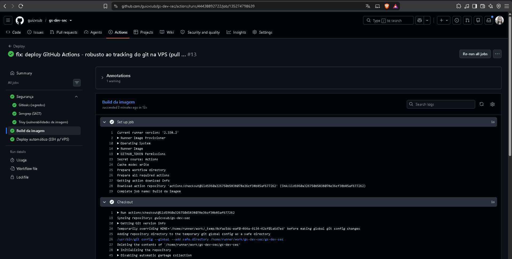
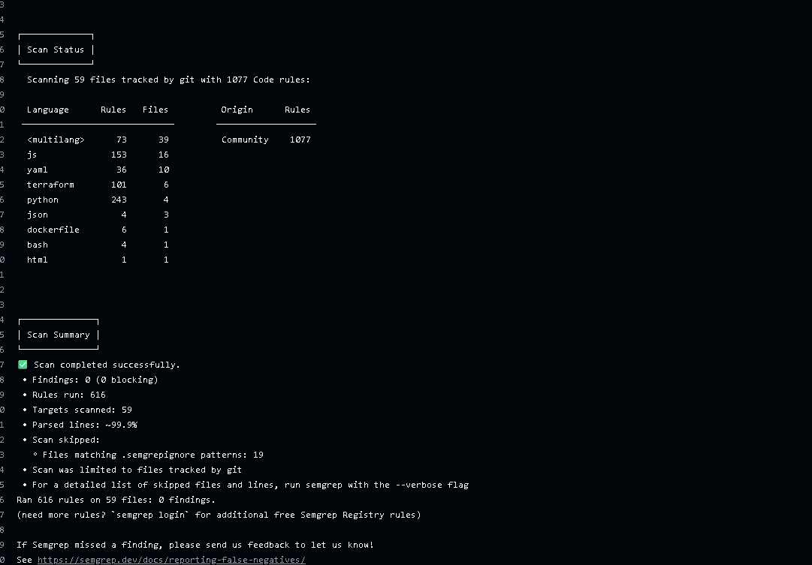
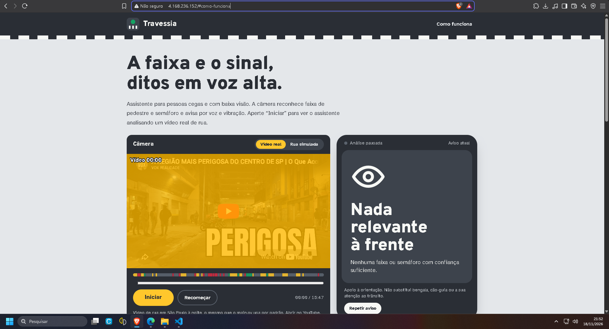
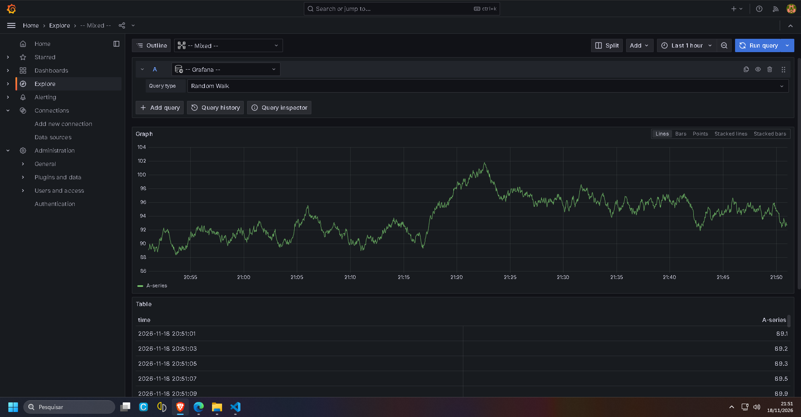

Antes de exportar: preencha os campos [PREENCHER], troque
SEU_USUARIO/SEU_REPO e IP_PUBLICO, e salve os prints em
docs/prints/. Depois clique em Imprimir / Salvar PDF.
Abrir README
FIAP • Global Solution 2026.2 • CitizenTech
Deploy Blindado — Travessia
Do commit ao MVP no ar: container, Terraform, pipeline DevSecOps
com Gitleaks e Semgrep, deploy automático via SSM e observabilidade na AWS.
Travessia é o MVP da CitizenTech para apoiar pessoas cegas ou com baixa visão
na travessia de ruas. Uma câmera vestível filma a via; um modelo de visão computacional
reconhece faixa de pedestre, semáforo e veículos; o resultado vira um aviso simples em
tela, voz e vibração.
Para o Deploy Blindado, o site foi empacotado em Docker e publicado na AWS por
um pipeline de ponta a ponta. O deploy só acontece depois que Gitleaks e
Semgrep passam. A infraestrutura é criada por Terraform; a imagem é
publicada no ECR; o container sobe na EC2 via SSM, sem SSH. Logs,
dashboard, alarmes e alerta por e-mail completam a observabilidade.
Segurança que bloqueia
Gitleaks no histórico completo e Semgrep com SARIF. Falhou, o deploy não inicia.
Infraestrutura reproduzível
VPC, EC2, EIP, ECR, IAM, CloudWatch, SNS e S3 declarados em Terraform.
Entrega automática
Build, push no ECR, deploy via SSM e verificação HTTP 200 no mesmo workflow.
Observabilidade
Logs JSON, métrica de 5xx, dashboard com 5 widgets e 3 alarmes com SNS.
2.O MVP
Problema
A travessia de ruas é uma das tarefas mais arriscadas para pessoas com deficiência
visual. Semáforos, faixas e veículos mudam rapidamente, e a bengala ou o cão-guia não
informam a cor do semáforo. A informação existe no ambiente, mas não chega de forma
acessível.
Solução
Uma câmera ESP32-CAM vestível captura a cena à frente. O núcleo em Python envia
frames ao modelo do Roboflow (classes pedestrian_crossing,
green_light, red_light e vehicle), aplica regras
de decisão e gera uma mensagem curta, como “Faixa de pedestre e semáforo verde a
frente”.
No MVP, a câmera é substituída por um vídeo público do YouTube, gravado em uma rua de
São Paulo. O site em React mostra o vídeo com as caixas de detecção e o aviso acessível.
A troca do vídeo pela câmera exige mudar apenas a fonte da imagem; a análise e as regras
continuam iguais.
Parte
O que é
Entra no deploy?
frontend/
Site React 19 + Vite 8 + Tailwind 4, com detecções salvas
SAST em Python, JS, Terraform, Dockerfile e workflows
Finding bloqueante
3
Terraform 1.10.5
fmt, validate e apply
Erro de sintaxe, plano ou apply
4
Docker
Build da imagem do site
Falha de build
5
Amazon ECR
Push da imagem com tag única
Falha de autenticação/push
6
AWS SSM
Pull, troca do container, healthcheck local
Comando remoto falha
7
curl
GET http://IP/ precisa retornar 200
Status ≠ 200
Gate real: o job deploy tem needs: security.
Se Gitleaks ou Semgrep falharem, o deploy nem começa. As actions são fixadas pelo
SHA completo do commit, não por tags móveis.
Pipeline de pull request
O pr.yml roda em PRs para a main: segurança, build da imagem
e terraform fmt -check + terraform validate (sem apply). O
destroy.yml é manual e exige digitar destroy.
5.Segurança
Gestão de segredos
A chave real do Roboflow fica apenas no .env local, que está no
.gitignore e no .dockerignore.
O .env.example tem somente o placeholder
sua_chave_do_roboflow_aqui, permitido no .gitleaks.toml.
O pipeline usa secrets do GitHub para as chaves AWS; nenhuma credencial é escrita
no repositório.
Se um segredo entrar no histórico, o Gitleaks falha. O procedimento é rotacionar a
chave e limpar o histórico — nunca desativar o gate.
Infraestrutura
Controle
Implementação
Superfície de rede
Security group só com 80/tcp de entrada; SSH ausente
Acesso administrativo
SSM Session Manager + IAM role
Metadata
IMDSv2 obrigatório (http_tokens = "required", hop limit 1)
Disco
EBS gp3 criptografado
Registry
ECR com tags imutáveis e scan on push
Container
Nginx unprivileged (UID 101), healthcheck
IAM
Role da instância com SSM + ECR read + logs; sem access keys na instância
State
S3 versionado, criptografado, com bloqueio de acesso público
Exceção documentada no Semgrep: o log group usa a criptografia em
repouso padrão da AWS (aws/logs), habilitada sem custo. O Semgrep
recomenda uma CMK dedicada; neste MVP, a regra foi suprimida com
# nosemgrep e a justificativa está no terraform/observability.tf.
Em produção, a evolução é criar uma aws_kms_key com política para o
serviço de logs.
Limitações de segurança da atividade
O usuário IAM do pipeline usa PowerUserAccess +
IAMFullAccess e access keys de longa duração. Em produção: OIDC + role de
menor privilégio.
O site é HTTP, sem domínio, WAF ou HTTPS. Evolução: CloudFront + ACM.
O ECR tem scan on push, mas o pipeline não bloqueia por findings do scan; os gates
obrigatórios são Gitleaks e Semgrep.
O container usa o driver awslogs para enviar ao log group
travessia-web (retenção de 14 dias). O formato JSON permite filtrar por
status, request e remote_addr no Logs Insights.
Métrica e alarmes
Alarme
Métrica
Condição
Ação
travessia-http-5xx
Travessia/Web Http5xx (metric filter)
Soma ≥ 1 em 5 min
SNS
travessia-cpu-high
AWS/EC2 CPUUtilization
Média > 80% por 10 min
SNS
travessia-status-check
AWS/EC2 StatusCheckFailed
Máximo ≥ 1 por 5 min
SNS
O metric filter usa o padrão { $.status >= 500 }; o alarme de 5xx tem
treat_missing_data = notBreaching e envia também o retorno a OK.
Dashboard e alerta
O dashboard travessia-mvp tem cinco widgets: CPU, erros 5xx, rede, Logs
Insights com os últimos erros e o estado dos três alarmes. O tópico SNS
travessia-alerts recebe as ações dos alarmes; a assinatura de e-mail precisa
ser confirmada no primeiro deploy.
7.Custos
Estimativa para us-east-1, preço on-demand, 730 h/mês, em novembro de
2026. Valores de referência; confirme na
calculadora da AWS.
Item
Quantidade
Preço unitário
US$/mês
EC2 t3.micro
730 h
US$ 0,0104/h
7,59
EBS gp3
20 GB
US$ 0,08/GB-mês
1,60
IPv4 público (EIP)
730 h
US$ 0,005/h
3,65
ECR
~0,1 GB + requests
US$ 0,10/GB-mês
0,02
CloudWatch Logs
~0,5 GB
US$ 0,50/GB ingestão
0,10
S3 (state) + SNS
< 1 MB + e-mails
—
0,00
Total
≈ 12,96
Premissas: não considera Free Tier nem créditos promocionais; com eles,
o valor pode ser menor. O IPv4 público é cobrado por hora, mesmo com a instância
parada, e o EBS continua cobrando enquanto o volume existir. Para encerrar a cobrança,
rode o workflow Destroy e exclua o bucket de state.
8.Evidências
Os prints abaixo devem ser salvos em docs/prints/ com os nomes indicados.
O checklist detalhado está em EVIDENCIAS.md.

Print 01 — Pipeline completoSalve em docs/prints/01-pipeline.png
Pipeline. Run do workflow Deploy com os jobs security, infrastructure e deploy verdes, e o resumo com a URL do MVP.
Print 02 — GitleaksSalve em docs/prints/02-gitleaks.png
Gitleaks. Step Procurar segredos no histórico com saída de sucesso e a flag --redact.

Print 03 — SemgrepSalve em docs/prints/03-semgrep.png
Semgrep. Resumo com Findings: 0 (0 blocking) e o artefato semgrep-sarif.
Print 04 — TerraformSalve em docs/prints/04-terraform.png
Terraform.Apply complete! Resources: N added e os outputs da infraestrutura.

Print 05 — Site públicoSalve em docs/prints/05-site.png
MVP no ar. Navegador em http://IP_PUBLICO, com a URL visível e o vídeo/detecções em execução.

Print 06 — DashboardSalve em docs/prints/06-dashboard.png
Dashboard. CloudWatch travessia-mvp com CPU, 5xx, rede, Logs Insights e alarmes.
Print 07 — AlertaSalve em docs/prints/07-alarme.png
Alerta. E-mail do SNS e/ou alarme em estado ALARM, com o nome do alarme visível.
Print 08 — LogsSalve em docs/prints/08-logs.png
Logs. Consulta no Logs Insights mostrando as linhas JSON e o campo status.
Print 09 — ECRSalve em docs/prints/09-ecr.png
Registry. Repositório travessia-web com a tag SHA-RUN_ATTEMPT e o resultado do scan.
Print 10 — CustosSalve em docs/prints/10-custos.png
Custos. Cost Explorer ou a tabela de custos deste relatório, com a estimativa de ≈ US$ 13/mês.
9.Como reproduzir
Crie o repositório público e envie o código (sem o .env).
Crie o usuário IAM travessia-ci com PowerUserAccess +
IAMFullAccess.
Configure os secrets AWS_ACCESS_KEY_ID e
AWS_SECRET_ACCESS_KEY e as variables AWS_REGION e
ALERT_EMAIL.
Rode o workflow Deploy.
Confirme a assinatura do SNS e abra a URL do resumo.
Para destruir: Destroy → digite destroy.
O passo a passo completo, incluindo IAM, secrets e troubleshooting, está no
DEPLOY.md.
10.Limitações e evoluções
Limitação
Evolução sugerida
HTTP sem domínio/HTTPS
CloudFront + ACM, ou Caddy com Let's Encrypt
Uma instância em uma AZ
ALB + Auto Scaling + multi-AZ
IAM com políticas amplas e access keys
OIDC + role de menor privilégio
Sem WAF
AWS WAF na distribuição
ECR scan não bloqueia
Gate com Inspector/ECR scan no pipeline
Sem backup
AWS Backup ou snapshot automatizado do EBS
Log group com chave gerenciada
CMK dedicada no KMS
Custo fixo de IPv4/EBS
Desligar/destruir fora das demonstrações
11.Conclusão
O MVP atende aos entregáveis do Deploy Blindado: repositório público com
Dockerfile, workflow e Terraform; URL pública na AWS; pipeline de ponta a
ponta com build, Gitleaks, Semgrep, Terraform, deploy automático via SSM e verificação
HTTP; observabilidade com logs JSON, dashboard, alarmes e alerta por e-mail; Ficha
Técnica no README.md e este relatório com arquitetura, evidências e custo.
O resultado é reproduzível: qualquer pessoa com acesso ao repositório e às credenciais
recria a infraestrutura e publica o MVP sem um deploy manual.